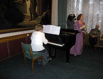
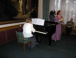

|
НОВОСТИ 2008 года С НОВЫМ 2009 ГОДОМ! С РОЖДЕСТВОМ ХРИСТОВЫМ! 1. Под занавес уходящего 2008 года новогодний подарок клубу преподнёс Народный драматический театр, которым руководит вот уже 46-й сезон Николай Алексеевич Троянов. В музыкальной гостиной Художественного музея им. В.В. Верещагина, где 20-й сезон действует Пушкинский клуб, была поставлена комедия в одном действии Е.Р. Дашковой «Господин Тои-си-Оков». Помещаем пригласительный билет на это неординарное событие. В нем можно ознакомиться с составом артистов театра. Думаю, что и в самой России эта пьеса Президента Академии Наук при Екатерине II давно не ставилась. Приносим извинения всем, кто не вместился в зале и слушал пьесу в прихожей. Фоторепортаж об этом событии тому свидетель. 2. В музыкальной гостиной художественного музея им. В.В. Верещагина 23 ноября т.г. состоялся литературно-музыкальный вечер Пушкинского клуба «Николаевский Гогольфест», посвященный 200-летию со дня рождения Николая Васильевича Гоголя. Литературную часть вечера вела Елена Михайловна Фарберова. Об иллюстрациях к произведениям Гоголя из коллекции художественного музея им. В.В. Верещагина рассказала и продемонстрировала Лидия Ивановна Одегова. О связи творчества Гоголя с музыкой поведала с музыкальной иллюстрацией на фортепиано Ольга Николаевна Петренко. В заключение вечера А.И. Золотухин рассказал о связях Пушкина и Гоголя. 3. 23 сентября 2008 г. совет Пушкинского клуба провёл своё заседание в кабинете директора Николаевского областного художественного музея им. В.В. Верещагина С.Н. Рослякова. На совете подготовлены изменения в составе контрольно-ревизионной комиссии и принята программа работы клуба на 20-й сезон: 2008-2009 гг. 28 сентября состоялось общее собрание Пушкинского клуба, на котором были утверждены Программа работы клуба на сезон 2008-2009 гг. и состав Совета и контрольно-ревизионной комисии клуба. Затем был проведен литературно-музыкальный вечер «Музыкальная культура юга Украины», ведущая Ольга Петренко, она же иллюстрировала на фортепиано образцы музыки николаевских композиторов, музыку председателя Союза николаевских композиторов Олега Таганова исполнил Михаил Хван, ученик Марины Матвеевой. 4. В соответствии с программой работы Пушкинского клуба 25 мая состоялся творческий вечер поэта Вячеслава Качурина. Состоялась презентация новой поэтической книги «Сегодняшняя молитва», изданная в СПб, в 2007 г., здесь приводим стихотворение, давшее название этому сборнику. Вячеслав Качурин член Союза писателей с 1974 г. за это время им выпущено более 20 книг стихов, часть из них написана для детей. На вечере выступили друзья поэта, бывшие ученики школы №38, в которой он преподавал, члены литобъединения «Стапель», руководителем которого он является. Интересным было выступление друга поэта заслуженного художника Украины Анатолия Завгороднего. Вячеслав рассказал о своей жизни, читал свои стихи, в том числе и по заявкам присутствующих, исполнил под аккомпанемент гитары, написанные им песни, пользующиеся популярностью. Член клуба Наталья Нагорняк (Обсерватория) прочла свои стихи, посвящённые барду В. Качурину, и подарила ему свою книжку стихов.
5. 23 марта в Пушкинском клубе состоялся вечер, посвященный Всемирному дню поэзии – читайте об этом редакционную статью в газете «Вечерний Николаев» от 27 марта т.г. «Всё преходяще – поэзия вечна». 6. В газете «Вечерний Николаев» 25 марта т.г. опубликована статья А. Золотухина «Нас нянчила война…», здесь приводим статью без купюр. 7. Раздел публикации пополнился статьей Когда же мы избавимся от дремучей совковости? 8. В соответствии с программой работы Пушкинского клуба в воскресенье 27 января, в 14 часов, в музыкальной гостиной художественного музея им. В.В. Верещагина состоялся вечер клуба "Любви страницы музыка хранит", исполнителем на рояле и автором музыкально-литературной композиции выступила Наталья Папушенко, в вечере приняла участие Алла Величко - сопрано. Были исполнены: «Лунная соната» и «Элизе» Бетховена, «Серенада» Шуберта, «Песня без слов» Мендельсона, «Романс» и «Вальс» Шумана, «Вальс» Брамса, два «Вальса» Шопена, «Как дух Лауры» и «Грезы любви» Листа, а также романс «Люблю тебя» и «Свадебный день в Трольгаузене» Грига.  

 ХРИСТОС РОДИЛСЯ! 9. В эти Рождественские дни мы славим Господа, как нашу Веру, Надежду и Любовь. И сразу вспоминается Пушкин: * * *
Если жизнь тебя обманет, Сердце в будущем живёт; 10. Прошлый год был годом свиньи по восточному календарю и дабы избавиться от свинства в Новом 2008 году, в разделе «Публикации» в подразделении «Публицистические статьи» помещаем письмо Пушкинского клуба Городскому голове В.Д. Чайке, которое, увы, до сего дня оставлено мэром даже без формального ответа. Это беспрецедентный случай явно неуважительного отношения городской власти к общественной организации, работающей с 1989 года, через которую за это время прошло несколько тысяч жителей нашего города, члены которой так много и бескорыстно сделали для сохранения исторической памяти и культуры в городе Святого Николая. Это прямое свидетельство бескультурия власти в отношении к исторической памяти – ибо за 2 года у городской власти не нашлось 1500 грн. для восстановления мемориальной доски на доме А.П. Зонтаг, в котором А.С. Пушкин написал лучшие строки, посвященные женщинам и начало письма Татьяны к Онегину из «Евгения Онегина» (читайте статью «В Николаеве нужно останавливаться у Зонтагов…»). Не говоря уже о том, что уже 5-й год лежит, изготовленная мемориальная доска выдающемуся общественному деятелю нашего города Г.Н. Ге (читайте статью «Депутат городской думы»), но за это время городские власти так и не смогли установить её на его доме по ул. Наваринская, 25. 11. К сожалению, свобода слова у нас существует только на 2-х телевизионных программах, а в прессе она подчинена либо коммерциализации, либо по-прежнему телефонному праву. В прошлом году я не смог опубликовать в центральной и местной прессе («День», «Южная правда», «Вечерний Николаев», «Николаевский бизнес») статью о выдающемся основателе нашей культуры Иларионе-Никоне (997-1088), выведенном в «Слове о полку Игореве» под именем Баяна. Не была опубликована в местных газетах и моя статья «Письмо к учёному соседу», поэтому помещаем их в подразделе «Публицистические статьи» раздела «Публикации». А.Золотухин, председатель Пушкинского клуба |
|||||||
|
Архив новостей: |